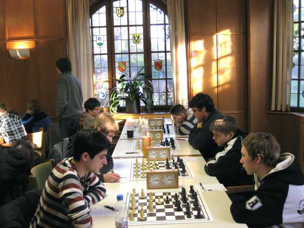
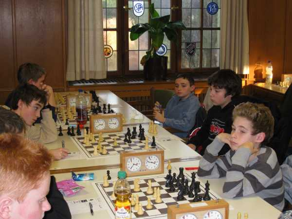
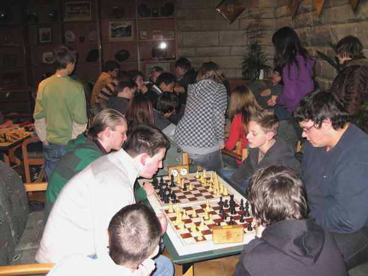
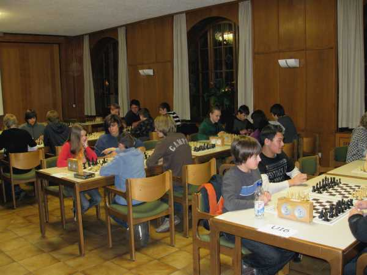

Turnierbeginn in der U16

Daniel wurde in der 1. Runde nicht richtig glücklich

Im Analyseraum konnte man sich beim Tandem zerstreuen

Am ersten Tag gab es Abends auch ein "Kennenlern-Tandem"

Jochen und Daniel, gemeinsam mit Gregor Haag vom
befreundeten Schachclub Brombach beim analysieren

Die Siegerehrung fand im Rahmen der Jahresversammlung der
Schachjugend Baden statt

Auch der BSV-Präsident Fritz Meyer (links) war anwesend.